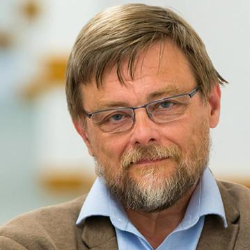
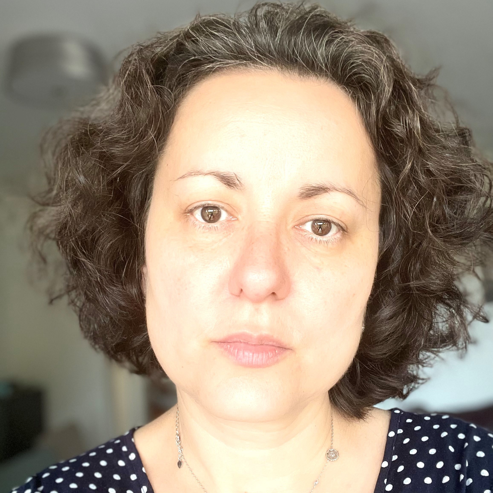

Scientific Committee
Updating as we are inviting members of scientific committee now.
.| Name | Title/Bio |
|---|---|
| Terry Lyons | Wallis Professor Emeritus and Professor of Mathematics |
|  | Professor Terry Lyons is the Wallis Professor Emeritus and Professor of Mathematics at the University of Oxford. He is currently PI of the DataSıg program (primarily funded by EPSRC), and of the complementary research programme CIMDA-Oxford. He was a founding member (2007) of, and then Director (2011-2015) of, the Oxford Man Institute of Quantitative Finance; he was the Director of the Wales Institute of Mathematical and Computational Sciences (WIMCS; 2008-2011). He came to Oxford in 2000 having previously been Professor of Mathematics at Imperial College London (1993-2000), and before that he held the Colin Maclaurin Chair at Edinburgh (1985-93). |
| Victorita Dolean Maini | Professor at the University of Strathclyde |
|  | Professor Victorita Dolean is a part-time Professor at the University of Strathclyde, Glasgow and a Fellow of the Institute of Mathematics and its Applications (IMA). She did her PhD thesis at INRIA in CFD using domain decomposition and parallel computing and subsequently became a research assistant at CMAP of Ecole Polytechnique in Paris. She got her first lecturer position at Evry University in Paris area, before moving to the University of Nice (now University Côte d’Azur). She also spent one year and a half as a visiting professor at the University of Geneva in Switzerland. Her research interests include the design of fast algorithms for the simulation of large scale complex systems of PDEs and scientific machine learning. Together with her collaborators, she was the recipient of Bull-Joseph Fourier Prize, delivered by Atos-Bull, for her innovative work on real time simulation of strokes using HPC (SIAM News, 2016). She co-authored a reference work on Domain decomposition methods (published by SIAM in 2015). |
| Zhiming Ma | Professor of Chinese Academy of Sciences, Dean of School of Statistics and Data Science, Nankai University |
| Professor Zhiming Ma is a professor of Chinese Academy of Sciences, and also serves as the Dean of School of Statistics and Data Science, Nankai University. He graduated from Chongqing Normal University in 1978 and completed his doctor’s degree in Institute of Applied Mathematics, CAS in 1984. Then he was elected Academician of Chinese Academy of Sciences and the World Academy of Sciences in 1995 and 1998 successively, and he became the Fellow of Institute of Mathematical Statistics (IMS) in 2007. His contribution in the theory of Dirichlet forms and Markov processes brought an end to a twenty years puzzle in the field. Ma and his team discovered a new framework of quasi-regular Dirichlet forms which correspond to right processes in one-to-one manner. | |
| Huazhen Lin | Professor of the School of Statistics, Southwestern University of Finance and Economics |
| Professor Huazhen Lin is a fellow of the Institute of Mathematical Statistics. She is currently a professor at the School of Statistics, and also serves the director at the Center of Statistical Research, Southwestern University of Finance and Economics. She received her Ph.D. degree from Sichuan University in China in 1999, and was a Postdoctoral Fellow at the Department of Biostatistics, University of Washington in the United States. She has published many research papers in the Annals of Statistics, Journal of the American Statistical Association, Journal of Econometrics, Journal of the Royal Statistical Society: Series B (Statistical Methodology), Biometrika, Biometrcs and so on, all of which are internationally outstanding statistics and econometrics journals. She has organized six NSFC programs. |